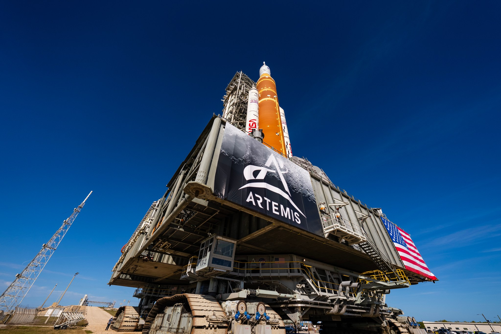
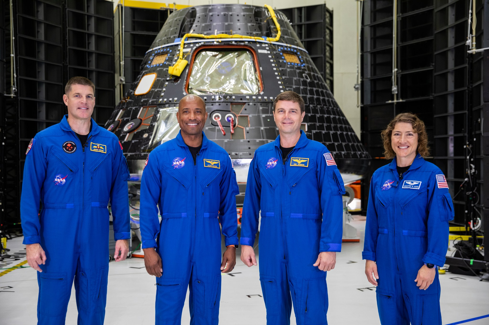
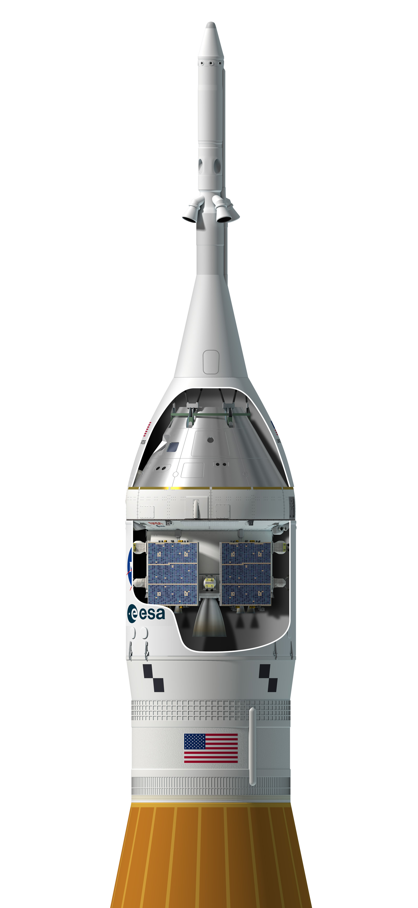

Misión Artemis II: el viaje que vuelve a acercar a la humanidad a la Luna 🌕🚀
Cuatro astronautas, diez días y una prueba decisiva: así es la misión que convertirá el regreso lunar en algo más que una promesa.
Artemis II será la primera misión tripulada del programa Artemis y la primera en enviar astronautas alrededor de la Luna en más de medio siglo. Con una tripulación de cuatro personas, una trayectoria de retorno libre y una duración aproximada de 10 días, la misión pondrá a prueba el cohete SLS, la nave Orion y sus sistemas de soporte vital en el entorno real del espacio profundo.

Hay misiones que aterrizan. Y hay misiones que cambian el marco mental de una era. Artemis II pertenece a la segunda categoría: no tocará la superficie lunar, pero sí pondrá a humanos de nuevo en el camino hacia la Luna y, con ello, medirá si el regreso profundo al espacio puede dejar de ser una nostalgia del Apolo para convertirse en una arquitectura real del siglo XXI.
Key takeaways
Key Takeaways
- Será la primera misión tripulada del programa Artemis y la primera en llevar humanos alrededor de la Luna desde 1972.
- La tripulación la forman cuatro astronautas: Reid Wiseman, Victor Glover, Christina Koch y Jeremy Hansen.
- Durará aproximadamente 10 días y seguirá una trayectoria de retorno libre, diseñada para ayudar a traer de vuelta a la nave de forma natural usando la gravedad de la Tierra y la Luna.
- Es una misión de prueba, no de alunizaje: validará el cohete SLS, la nave Orion y los sistemas de soporte vital en espacio profundo.
- Europa y Canadá no están de adorno: el módulo de servicio europeo es esencial para propulsión, energía, aire y agua, y Jeremy Hansen será el primer canadiense en una misión alrededor de la Luna.
1. Por qué Artemis II importa de verdad
Artemis I ya demostró que el hardware podía viajar al entorno lunar sin tripulación. Pero Artemis II es la prueba que realmente cuenta para la exploración humana: por primera vez volarán personas dentro de Orion, a bordo del SLS, durante una misión diseñada para validar sistemas críticos en el entorno real del espacio profundo.
NASA define Artemis II como un paso clave para un regreso sostenible a la Luna y, más adelante, para misiones hacia Marte. No es una simple repetición del pasado: es una verificación operativa, humana y tecnológica de la cadena completa que hará posibles futuras misiones de superficie.
Artemis II no busca “ganar una foto”. Busca demostrar que el sistema funciona con seres humanos a bordo.
2. La tripulación: cuatro perfiles, una misión histórica
La tripulación oficial de Artemis II está compuesta por:
| Astronauta | Rol | Agencia |
|---|---|---|
| Reid Wiseman | Commander | NASA |
| Victor Glover | Pilot | NASA |
| Christina Koch | Mission Specialist | NASA |
| Jeremy Hansen | Mission Specialist | CSA |
NASA destaca que el equipo fue elegido para combinar experiencia técnica, trabajo en equipo y capacidad operativa bajo presión. La misión también marca varios hitos simbólicos y políticos del programa Artemis: Victor Glover será el primer astronauta negro en una misión lunar, Christina Koch formará parte de la primera mujer que viaje tan lejos en este nuevo capítulo lunar, y Jeremy Hansen será el primer canadiense en una misión alrededor de la Luna.
3. Cómo será el viaje alrededor de la Luna
Según NASA y ESA, Artemis II despegará desde el Centro Espacial Kennedy para una misión de unos 10 días. Tras alcanzar la órbita terrestre, la tripulación comprobará sistemas, realizará maniobras y después ejecutará la inyección translunar que pondrá a Orion en rumbo hacia la Luna.
El trayecto no incluye alunizaje. En cambio, Orion seguirá una trayectoria de retorno libre, rodeando la Luna y regresando a la Tierra aprovechando la mecánica orbital como parte del diseño de seguridad de la misión. NASA describe esta trayectoria como una ruta en la que la gravedad ayuda a guiar a la tripulación de vuelta a casa.
Qué se pondrá a prueba
- Rendimiento del cohete SLS con tripulación
- Operación de Orion en espacio profundo
- Sistemas de soporte vital para cuatro astronautas
- Procedimientos de navegación, comunicaciones y operaciones manuales
- Trabajo conjunto entre NASA, ESA y CSA
4. La pieza europea que hace posible la misión
Uno de los detalles más interesantes de Artemis II es que la nave no es solo estadounidense. El European Service Module de ESA es la “central energética” de Orion: proporciona electricidad, propulsión, control térmico, además de agua, oxígeno y nitrógeno para la tripulación. ESA también explica que este módulo será esencial para maniobras y para mantener a la nave operativa durante todo el viaje.
Ese componente convierte a Artemis II en algo más que una misión nacional: es una operación multinacional donde cada socio aporta una parte crítica del sistema.
Artemis I, II y III en una mirada
| Misión | Tripulación | Objetivo principal | Estado/rol |
|---|---|---|---|
| Artemis I | 0 | Probar SLS y Orion sin humanos | Vuelo no tripulado completado |
| Artemis II | 4 | Validar el sistema con humanos alrededor de la Luna | Primera misión tripulada Artemis |
| Artemis III | 4 | Llevar astronautas a la superficie lunar | Próximo gran paso del programa |
Esta progresión importa porque muestra la lógica del programa: primero demostrar, luego tripular, después alunizar.
Conclusión
Artemis II no será recordada por plantar una bandera. Será recordada, probablemente, por algo más importante: convertir una ambición en una capacidad probada. Si la misión sale bien, el regreso humano a la Luna dejará de depender de presentaciones, calendarios o nostalgia histórica y empezará a apoyarse en algo mucho más sólido: una nave, una tripulación y un sistema que ya habrán ido y vuelto.
Further Reading
- NASA — Artemis II mission overview
- ESA — Artemis II and the European Service Module
- Canadian Space Agency — Artemis II: Destination Moon
How did this post make you feel?
Pick one reaction:

